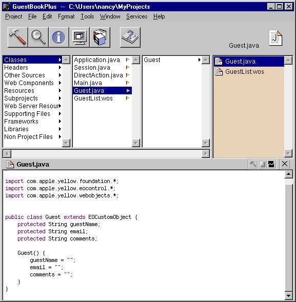

PATH
WebObjects 4.0 Documentation >
WebObjects Tools and Techniques
 Table of Contents
Table of Contents  Previous Section
Previous Section
Editing Your Project's Source Files
Every component in your project has a code file whose name is the name of the component followed by the appropriate extension (.java for Java, .m for Objective-C, and .wos for WebScript). Your project may use different languages for different components.
Each component's code specifies the component's behavior. Each component is actually a subclass of WOComponent. This class has standard methods (such as awake and init) that you may want to override (see WebObjects Developer's Guide for more information on these methods). You can also write your own methods and bind them to dynamic elements in your component (see "Working With Dynamic Elements", as well as the Dynamic Elements Reference, for information on binding dynamic elements).
In addition to the component's code, each project has an application code file (Application.java, Application.m, or Application.wos) and a session code file (Session.java, Session.m, or Session.wos). These files implement your applications custom subclasses of WOApplication and WOSession.
When you first create your project using the Wizard, you specify the language you want to use (see "Choosing the Programming Language"). This language applies to the application and session code, as well as to the code for your initial component, Main. Other components may be written in different languages.
Regardless of the language you select, all source code for classes appear in the Classes suitcase. On disk, they are located at the top level of the project directory.

To save changes in your code, choose File  Save.
Save.
Note: WebObjects Builder gets information from Project Builder about variables and methods in your code. If you add or delete a variable or method, WebObjects Builder doesn't get the updated information until you save the file.
Table of Contents  Next Section
Next Section